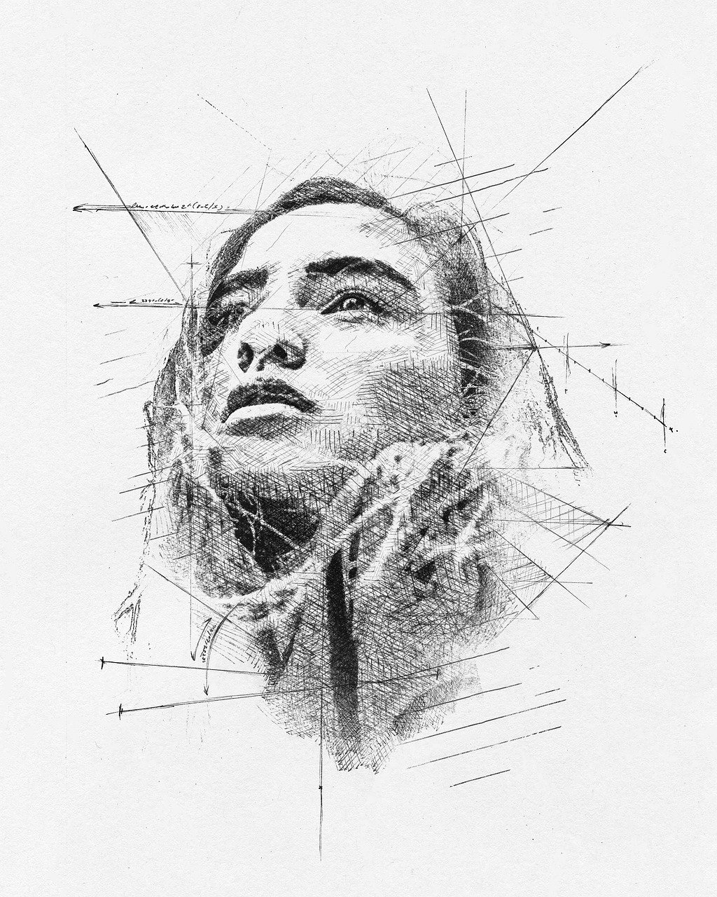
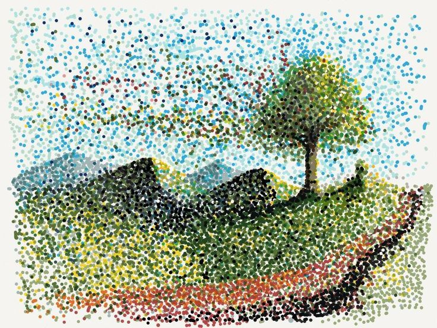
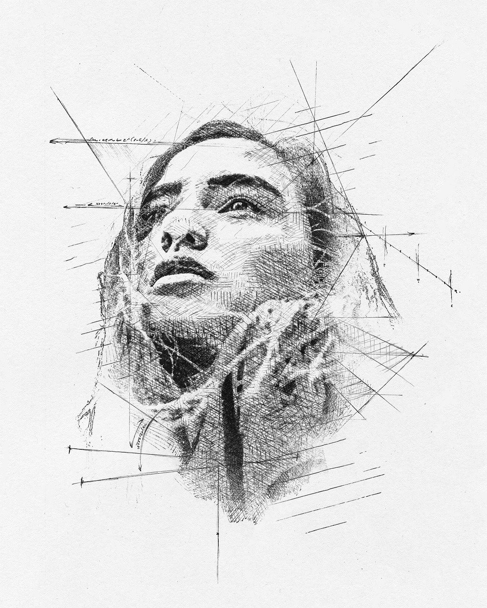
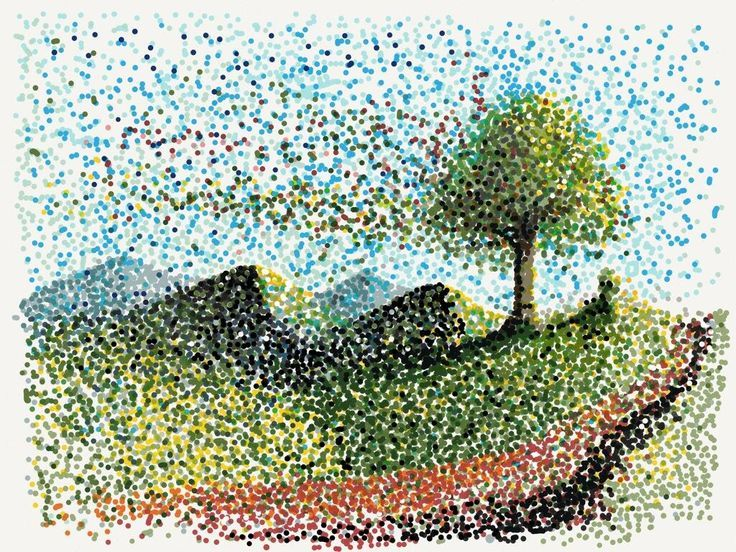

Técnicas de Dibujo
  
 
Técnicas de Dibujo
Consiste en usar líneas de diferente grosor, dirección y tono para definir contornos, detalles y texturas.Tambien sirve para hacer sombras.
Es utilizar diferentes tonos y valores para hacer sombras, creando volumen, profundidad y formas tridimensionales.
Se trata de un material suave y maleable que se utiliza para crear un mayor contraste en las obras de arte.
Los lápices varían en dureza, desde los más blandos que permiten sombreados más oscuros, hasta los más duros que proporcionan líneas más nítidas. Se pueden crear diferentes tonalidades y texturas. Además se pueden combinar con otras técnicas.
Depende de la cantidad de agua de obtienen tonos más claros o más oscuros. La acuarela permite crear efectos de transparencia, lavados y degradados.
Se basa en la aplicación de puntos de colores variando en el grosor y especaio que hay entre ellos.